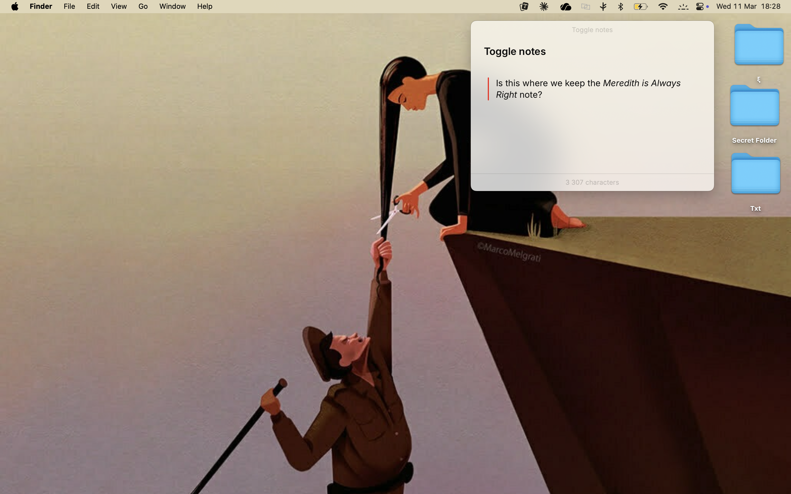

● Quick reference guide
Raycast 101
An apology note from your gen z research assistant for unpromptedly installing things on your computer <3 The
guide is here if you forget anything, but you'll find the extensions and keyboard shortcuts that work best
for you.
Every extension and command in Raycast can have its own shortcut. If you don't like 'a
suggested
shortcut, you can change it to whatever you want.
01
Open Raycast, then press ⌘ , (Command + comma) to open
Preferences
02
Click Extensions in the left sidebar
03
Find the extension or command you want, then click the shortcut field next to it
04
Press the new key combination you want. Raycast will warn you if it's already in
use
✎
Tip: You can assign a shortcut to launch any app directly. Under Extensions, search the
app
name and set a shortcut — then you never need to reach for the Dock again.
My favourite thing ever!
01
Open Raycast and type "Floating Notes", then press ↵
02
A small note window appears and floats above everything, even as you switch between
apps
03
Click anywhere in it and start typing. Your note is saved automatically
04
Close it when you're done — your note will be there the next time you open it
✎
Set a keybind for this one. Floating Notes is most useful when it opens instantly —
mid-call, mid-email, mid-anything. Go to Preferences → Extensions → search "Floating Notes" and assign
something like ⌥ ⇧ .

Instead of reaching for the Dock or clicking around (as wonderful as it is), you can
jump between apps much faster. These are not specific to Raycast, but now you have them here <3
Switch to last used app
Toggles between two apps instantly
⌘+Tab
Cycle through all open apps
Hold ⌘, keep pressing Tab to move forward
⌘+Tab hold
Cycle backwards
Hold ⌘ + Tab, then add Shift to go back
⌘+⇧+Tab
Switch windows within same app
e.g. multiple Finder or browser windows
⌘+`
▲
Window tiling with Raycast: You can also snap windows to halves and quarters of your
screen. Search "Left Half" or "Top Right Quarter" in Raycast, and assign shortcuts — so you can tile
your
screen without any extra app.
Raycast remembers everything you've copied — text, links, images — so you can paste
anything from the past days or weeks, not just the last thing you copied. There are a lot of useful features
if you click
⌘K when you have selected an entry.
Open Clipboard History
Assign this in Preferences → Extensions
⌘+⇧+V
Search your clipboard
Type to filter all copied items
type to search
Paste selected item
Pastes the highlighted clipboard item
↵
Paste without formatting
Plain text only — no font, size, or colour carried over
⌘+⇧+↵
★
Paste without formatting. When you copy text from a website or email and
paste it into a Word document, it drags in the original font and styling. With Clipboard History open,
pressing ⌘ ⇧ ↵ strips all of that and pastes just the clean text. No more "why does my
document look like a website."
See and open everything you've recently downloaded — without opening a browser or
Finder.
01
Open Raycast and type "Downloads"
02
A list of your recent downloads appears. Use ↑ ↓ to browse
03
Press ↵ to open the file, or ⌘ ↵ to reveal it in
Finder
▲
Assign a shortcut: I assigned shortcuts for this, but feel free to change them! If you
forget, navigate to extentions. To open your latest download use
⌘ ⇧ , and to open your Downloads folder use ⌘ ⇧ \
Pin the things you use every day to the top of Raycast's results. Apps, folders,
commands, websites — anything you open more than once a day belongs here.
01
Search for anything in Raycast — an app, folder, or command
02
Highlight the result, then press ⌘ ⇧ F to add it to Favourites
03
It now appears at the top of Raycast every time you open it — no typing needed
04
To remove a favourite, highlight it again and press ⌘ ⇧ F to unpin
it
Jump straight to any folder on your Mac without opening Finder and navigating there
manually. Raycast has a built-in Search Files command — here's how to install it and give
it a shortcut.
Installing folder search
01
Open Raycast and type "Store", then press ↵ to open the Raycast
Store
02
Search for "File Search" and click the result
03
Click Install — it only takes a second
Setting a keyboard shortcut
01
Press ⌘ , to open Preferences, then click Extensions
02
Search for "File Search" in the extensions list
03
Click the shortcut field next to it and press your chosen key combination —
something like ⌥ F works well
Using it
01
Press your shortcut (or open Raycast and type "Search Files")
02
Type any folder or file name — for example "Documents" or a project
folder
03
Press ↵ Return to open it in Finder, or ⌘ ↵ to
reveal its location
◆
Favourite a folder: If you open the same folder every day, add it to Favourites (see
the section above) so it appears at the top of Raycast — no typing needed.
The full list, for quick reference.
Cycle open apps (forward)
⌘+Tab hold
Cycle open apps (backward)
⌘+⇧+Tab
Switch windows (same app)
⌘+`
Paste without formatting
⌘+⇧+↵ (in clipboard)
Add / remove a Favourite
⌘+⇧+F
Search Files (folder search)
set your own in Preferences
Floating Notes
set your own in Preferences
⌘ = Command
⇧ = Shift
⌥ = Option / Alt
⌃ = Control
↵ = Return / Enter
Made with care for Meredith
· Raycast for Mac